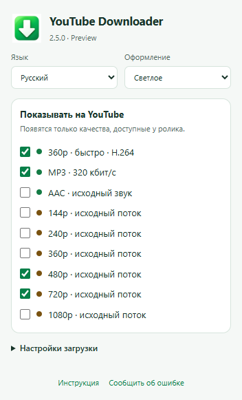

YouTube Downloader — Инструкция
2.5.0 Preview · Windows
Установка
- Распакуйте весь ZIP выпуска в доступную для записи папку. Проверьте SHA256SUMS.txt. Браузер, Windows и системный .NET устанавливаются отдельно.
- Закройте вкладки YouTube и обычным запуском откройте Install.cmd, без администратора. Язык можно задать: Install.cmd ru, de или en.
- Откройте edge://extensions, chrome://extensions или browser://extensions. Включите режим разработчика и выберите «Загрузить распакованное расширение».
- Укажите %LOCALAPPDATA%\YTWin7_360_MP3\extension. При обновлении перезагрузите расширение и страницу YouTube.
- Закрепите зелёную стрелку в панели браузера. По ней открываются язык, тема и показ форматов. Начните с 480p.
Ограничение Preview: YouTube может потребовать подтверждение сеанса (attestation required) и остановить загрузку исходного качества. Автоматического перехода к просмотру нет; загрузка целого ролика не гарантируется.
Использование
Откройте завершённый ролик YouTube, дождитесь сведений о нём и окончания рекламы. Нажмите нужный формат. Если SABR требует свежий запрос, кратко включите видео, поставьте паузу и повторите. Автоматического возврата к просмотру нет. При отказе формата — максимум три попытки на том же разрешении.
Файлы и удаление
Исходные MP4, MP3 и AAC/M4A сохраняются на рабочем столе. Быстрый 360p — в папку загрузок браузера. Кэш звука и временные файлы находятся в LocalAppData. Uninstall.cmd удаляет только интеграцию с браузерами, сохраняя загрузки, кэш и файлы программы. Само расширение удаляется в браузере отдельно.
Восстановление после обновления: первая прежняя установка вместе с расширением, локальным компонентом, FFmpeg/FFprobe и регистрацией сохраняется в %LOCALAPPDATA%\YTWin7_WatchCapture\BACKUP_PRE_250. Закройте вкладки YouTube, запустите Restore_previous.cmd из комплекта и перезагрузите расширение. При сбое установки выполняется попытка вернуть снимок этой операции. Uninstall.cmd сохраняет файлы программы и аудиокэш.
Если не работает
Проверьте версию 2.5.0 в меню, папку установленного расширения и успешное завершение Install.cmd. Панель «SABR 1.2» относится к старой версии. CHECK_ENVIRONMENT.cmd показывает локальный компонент и регистрацию браузеров. В сообщении об ошибке укажите версии браузера/Windows, качество и точный текст. Не публикуйте личные ссылки, cookies и журналы с персональными данными.
Совместимость и проверки
2.5.0 на Windows 11: Chrome 155.0.8059.80 и Edge 155.0.4283.45 прошли проверки меню, настроек и настоящей связи с локальным компонентом через регистрацию Native Messaging в отдельных профилях. Проверены установка для текущего пользователя в отдельную папку, обновление 2.4.2, восстановление и удаление интеграции. Локальные медиатесты охватывают 144–1080p, AAC, Opus и MP3 с проверкой сохранности пакетов. Пробная загрузка 480p в Edge остановилась на подтверждении сеанса YouTube; целый ролик в этом тесте не получен. Новая чистая Windows 7, Windows 10 и актуальный Яндекс с 2.5.0 отдельно ещё не проверены. Для прежней 2.4.2 подтверждена пользователем работа на сброшенной Windows 7 с Яндексом 24.10.4.850 и Windows 11.
Ограничения
Предварительный выпуск: YouTube может изменить протоколы или отказать в потоке. Выбор 144–1080p; появляются только доступные качества. Прямые эфиры, плейлисты, DRM, Vimeo и другие сайты не поддерживаются. Подписанные ссылки могут истекать, самостоятельного обновления токенов пока нет. MP3 320 не улучшает исходник. EXE без цифровой подписи.
Права и компоненты
Собственные исходники опубликованы для ознакомления как учебный проект и портфолио, не под открытой лицензией. Неизменённый выпуск разрешается запускать для личного использования. FFmpeg, LAME, googlevideo и protobuf сохраняют отдельные лицензии и условия предоставления исходников. См. RIGHTS.md и THIRD_PARTY_NOTICES.md.
